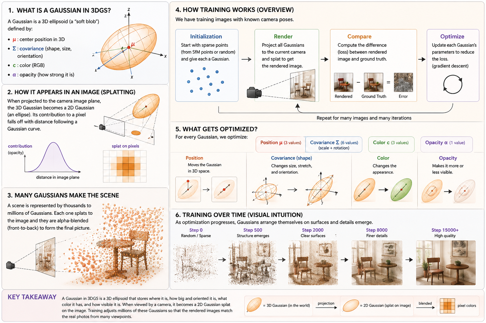

What a Gaussian is, how it lands on a pixel, and how millions of them learn to look like a real photo.
3D Gaussian Splatting represents a scene as a cloud of 3D Gaussians — each one a "soft blob" with a position, an ellipsoidal shape, a color, and an opacity. To render the scene, every Gaussian is projected to the camera as a 2D Gaussian splat and alpha-blended into the image. To train the scene, gradient descent nudges the parameters of every Gaussian so the rendered images match the real photos. Once trained, novel views are produced by re-projecting the same Gaussians from a new camera — fast enough for 100+ FPS rendering.

A 3D Gaussian is a 3D ellipsoid — a "soft blob" — defined by four pieces of data:
The center of the blob in 3D world space.
How wide it is along three principal axes (scale) and which way those axes point (rotation). A spherical blob has equal scales; a stretched ellipsoid does not.
The colour the blob emits when drawn. The real paper uses view-dependent spherical-harmonic coefficients so colour changes with viewing angle, but the idea is the same.
How "present" the blob is when it gets alpha-blended onto a pixel. α = 0 invisible; α = 1 fully contributing. Tiny opacities are pruned during training.
The whole representation is just numbers. Eleven floats per Gaussian (3 + 6 + 3 + 1 = 13 if you count separately; the paper bundles scale and rotation as 7 stored values). A scene is "just" a list of millions of these.
To render the scene, the engine projects each 3D Gaussian onto the camera's image plane. The magic property: the projection of a 3D Gaussian is exactly a 2D Gaussian. No approximation. So each blob becomes a soft, oriented ellipse on the screen, with density falling off in a bell curve away from its centre.
Below is one 2D splat. Drag the sliders to change its centre, shape, rotation, opacity, and colour — the same parameters that get optimized during training, just on a 2D slice for visual clarity.
A real scene is represented by thousands to millions of Gaussians. Every visible pixel is the sum of contributions from many overlapping splats, alpha-blended front-to-back. Sharp surfaces emerge when many small, well-aligned Gaussians cluster on the same surface; smooth gradients come from the bell-curve falloff of each one.
An important practical question: do those millions of blobs need to be spherical, or can they be stretched ellipsoids? The answer matters a lot for memory. Below, the same diagonal "edge" is covered by isotropic spheres on the left and anisotropic ellipsoids on the right. Slide to see how many of each you need.
We start with photographs of a real scene from many known camera angles. The optimizer is a simple loop: render → compare → optimize, repeated tens of thousands of times. Click each stage below to see what happens in it.
Start with a sparse cloud of points — from SfM (structure-from-motion) or a random scatter — and turn each into a tiny Gaussian.
For the current camera, project all Gaussians, splat them, and alpha-blend → produce a rendered image.
Compute pixel-wise loss (typically L1 + D-SSIM) between the rendered image and the real photo from that camera.
Backpropagate the loss into every Gaussian's parameters. Adam steps each one toward a better fit. Then jump to a new camera and repeat.
For every Gaussian, the optimizer updates four groups of parameters:
Moves the Gaussian in 3D space. Adam updates the (x, y, z) center directly.
Three scales (stored in log-space to stay positive) and a quaternion rotation (renormalized each step). Together they define the ellipsoid's shape.
RGB (or, in the full paper, spherical-harmonic coefficients for view-dependent colour).
Stored pre-sigmoid so it stays in (0, 1). Gaussians whose α drops below a threshold get pruned by adaptive density control.
The optimizer also clones, splits, and prunes Gaussians every few hundred iterations — adaptive density control — so that under-fitting regions get more blobs and over-fitting regions get fewer.
As optimization progresses, the Gaussians arrange themselves into surfaces and details emerge. Slide through the training timeline below to see how a noisy cloud at step 0 becomes a coherent scene by step 15 000+.
A Gaussian in 3DGS is a 3D ellipsoid that stores where it is, how big and oriented it is, what colour it has, and how visible it is. When seen by a camera, it becomes a 2D Gaussian splat on the image. Training adjusts millions of these so that the rendered images match real photos from many viewpoints — and once trained, the same Gaussians can be re-rendered from any new viewpoint in real time.
Two live demos from a single 360° panorama are hosted alongside this page:
Both demos use the depth-only baseline described in the world-models repo. The geometry is partly hallucinated from a single image — it's a curiosity demo, not a production reconstruction, but it makes the splat-vs-mesh distinction visceral.
Highlight any text on this page to leave a comment. Comments stay in your browser (localStorage) — they're not uploaded anywhere. Use the side panel's Copy button to grab them as JSON, or Download at the top to save this whole page (with your annotations) as an HTML file.